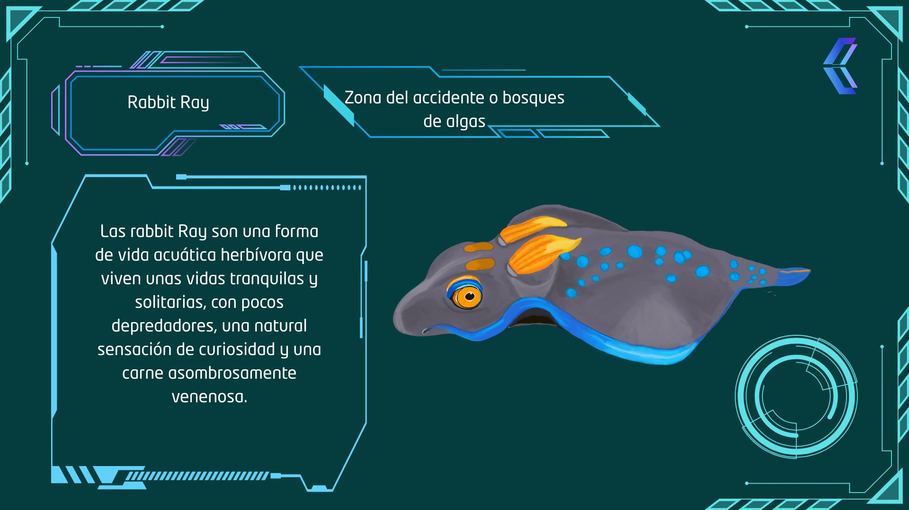

Subnautica
ATENCIÓN: Esta página simula la campaña de microfinanciación de un videojuego ficticio y no
representa un producto real. Práctica de Multimedia, 1º GDDV - Curso 24/25
(Móstoles/Quintana), URJC. La URJC no se hace responsable del contenido expuesto por el
autor.
Aquí puedes ver un trailer del juego
